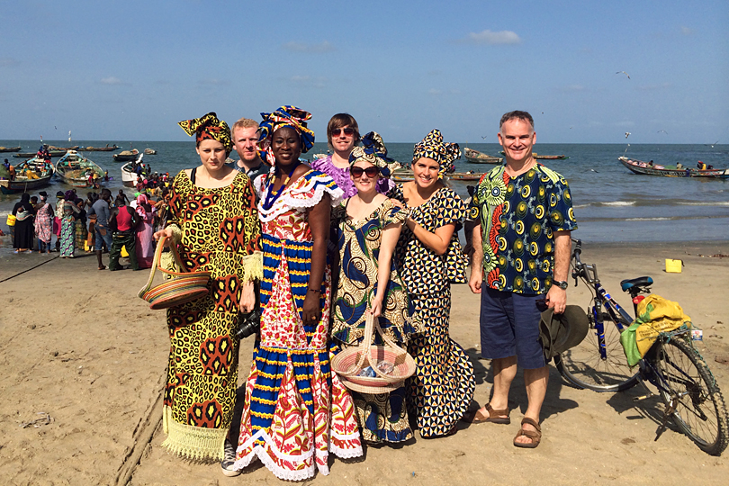
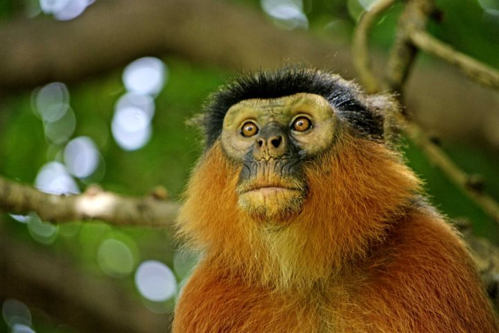

Full Gallery
Browse a stunning collection of photographs capturing the beauty and energy of our travels. Get inspired for your next adventure by seeing the sights through the lens of our visitors.


